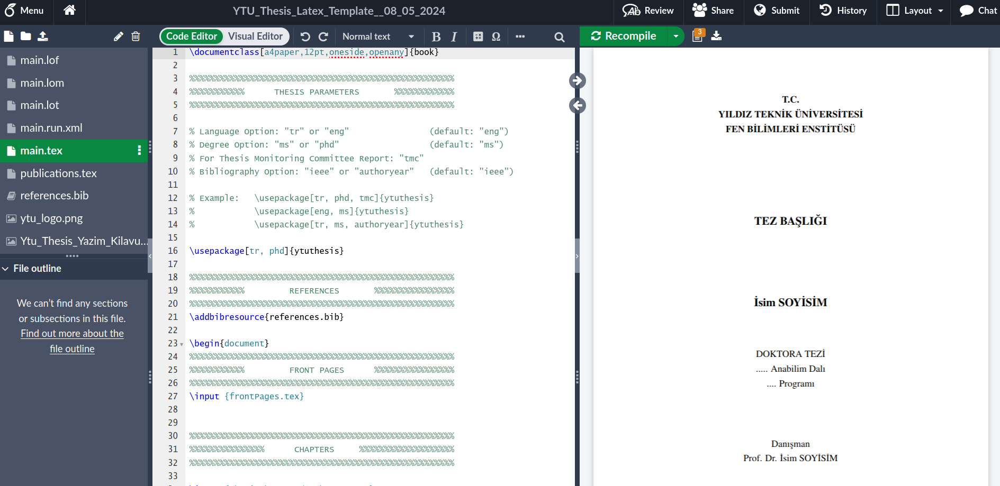

LaTeX içeriğini derlemek
LaTeX kurulumu
LaTeX içeriği derlenmesi gerektiği için, dosyaları kendi bilgisayarınızda derlemek istiyorsanız, bilgisayarınıza LaTeX yazılımı kurmanız gerekmektedir.
- Windows için MiKTeX kurmanız gerekmektedir.
- Mac için MacTeX kurmanız gerekmektedir.
- Linux için pdflatex kurmanız gerekmektedir.
Kurulumdan sonra, gerekli LaTeX paketlerini yüklemeniz gerekmektedir. Kısacası, LaTeX’i kendi bilgisayarınızda yerel olarak kurmak ve kullanmak zahmetli olabilir.
Overleaf
Overleaf, LaTeX ve tüm gerekli paketlerin yüklü olduğu bir çevrimiçi ortam sağlar, bu yüzden hiçbir şey yüklemenize gerek yoktur.
Bir hesap oluşturmak için, lütfen Overleaf Kayıt sayfasına gidin.
Overleaf ortamında farklı döküman türleri oluşturmak
Overleaf platformu, makale, tez, sunum, poster, CV/Resume gibi çok farklı türde döküman oluşturmak için kullanılabilir. Bunun için çok çeşitli hazır şablonlar Overleaf sitesinde bulunabilir. “Templates” linki ziyaret edilerek, farklı türde şablonlar arayıp, deneyebilirsiniz.

Sırasıyla aşağıdaki döküman türlerine göre örnekler yapalım.
- CV
- Poster
- Sunum (Beamer)
- Makale
- Tez (YTÜ Şablonu ile)
CV hazırlama
Resume/CV şablonları linkini tıkladıktan sonra örnek bir CV şablonu seçip, kendi bilgileriniz ile doldurup derleme yaparak PDF halinde CV oluşturabilirsiniz. AltaCV şablonu için tıklayınız.
Poster hazırlama
Poster şablonları ile dikey veya yatay formatta, poster boyutunda PDF dökümanları hazırlayabilirsiniz.
(Beamer ile) sunum hazırlama
Beamer, harika görünen sunumlar oluşturmak için güçlü ve esnek bir LaTeX kütüphanesidir. Bir Beamer slayt gösterisi yapmanın temel adımları: başlık sayfası oluşturma, logo ekleme, önemli noktaları vurgulama, içindekiler tablosu oluşturma ve slayt gösterisine efektler ekleme şeklindedir.
Aşağıda minimal bir beamer sunum örneği verilmiştir:
\documentclass{beamer}
%Information to be included in the title page:
\title{Sample title}
\author{Anonymous}
\institute{Overleaf}
\date{2021}
\begin{document}
\frame{\titlepage}
\begin{frame}
\frametitle{Sample frame title}
This is some text in the first frame. This is some text in the first frame. This is some text in the first frame.
\end{frame}
\end{document}Bu latex kodunun derlenmesi ile iki slayt içeren aşağıdaki sunum dosyası oluşacaktır:
Beamer: sunum başlık slaytı
Başlık (title) slaytına, başlık, alt başlık, yazar adı, kurum adı, konferans adı ve logo gibi bilgiler ekleneibilir
\title[About Beamer] %optional
{About the Beamer class in presentation making}
\subtitle{A short story}
\author[Arthur, Doe] % (optional, for multiple authors)
{A.~B.~Arthur\inst{1} \and J.~Doe\inst{2}}
\institute[VFU] % (optional)
{
\inst{1}%
Faculty of Physics\\
Very Famous University
\and
\inst{2}%
Faculty of Chemistry\\
Very Famous University
}
\date[VLC 2021] % (optional)
{Very Large Conference, April 2021}
\logo{\includegraphics[height=1cm]{overleaf-logo}}Çıktı bu şekilde elde edilecektir:

Beamer: önemli kelime ve cümlelerin işaretlenmesi
\begin{frame}
\frametitle{Sample frame title}
In this slide, some important text will be
\alert{highlighted} because it's important.
Please, don't abuse it.
\begin{block}{Remark}
Sample text
\end{block}
\begin{alertblock}{Important theorem}
Sample text in red box
\end{alertblock}
\begin{examples}
Sample text in green box. The title of the block is ``Examples".
\end{examples}
\end{frame}Çıktısı aşağıdaki gibi görünecektir:
Beamer: temalar
Overleaf beamer sayfasında beamer temalarını liste halinde görebilirsiniz.
Beamer ile hazırlanmış sunum şablonlarından birini Overleaf Templates sayfasından seçip, değiştirip, derleyip PDF halinde sunum dosyası hazırlayınız.
Overleaf’te makale yazımı
Overleaf şablonlarında akademik makale sayfası incellendiğinde, farklı birçok derginin resmi şablonlarının Overleaf üzerinden paylaşıldığı görülecektir. Dergilerin paylaştıkları şablon üzerinden makale yazılması, biçimsel açıdan uygunluğu çabuk bir şekilde sağlanmasını mümkün kılacaktır. Hatta bazı dergilerin şablonlarında “Submit to journal” bağlantısı bulunmaktadır, böylelikle makale yazımı tamamlandığında dergiye Overleaf üzerinden başvuru yapılabilmektedir.
Akademik makalelerde temel olarak aşağıdaki unsurlar bulunmaktadır:
- Abstract ve diğer bölümler
- Figürler
- Tablolar
- Atıflar
Bütün bunları Springer/Nature makale şablonu üzerinden inceleyelim.
Abstract bilgisi \abstract{...} içine yazılmalıdır

Figür eklerken, aşağıdaki kod kullanılmaktadır:
\begin{figure}[h]
\centering
\includegraphics[width=0.9\textwidth]{fig.eps}
\caption{This is a widefig. This is an example of long caption this is an example of long caption this is an example of long caption this is an example of long caption}\label{fig1}
\end{figure}Bu kodda, \textwidth sayesinde figürün yazı genişliğine göre ne kadar geniş olacağı belirlenmektedir. PDF, EPS, PNG veya JPG formatındaki bir resmi Overleaf’e yükledikten sonra \includegraphics komutu içinde adını yazarak makalenize ekleyebilirsiniz. \caption içinde verilen yazı, derginin şablonuna uygun olarak figürün altında, açıklama olarak eklenecektir. Son olarak, \label komutu ile figür veya tablonuza etiket ekleyebilir böylelikle makale metni içinde figür veya tablolarınıza atıfta bulunabilirsiniz. Yukarıdaki kod, PDF formatında aşağıdaki gibi görünecektir

Tablo eklemek için aşağıdaki kod kullanılmıştır:
\begin{table}[h]
\caption{Caption text}\label{tab1}%
\begin{tabular}{@{}llll@{}}
\toprule
Column 1 & Column 2 & Column 3 & Column 4\\
\midrule
row 1 & data 1 & data 2 & data 3 \\
row 2 & data 4 & data 5\footnotemark[1] & data 6 \\
row 3 & data 7 & data 8 & data 9\footnotemark[2] \\
\botrule
\end{tabular}
\footnotetext{Source: This is an example of table footnote. This is an example of table footnote.}
\footnotetext[1]{Example for a first table footnote. This is an example of table footnote.}
\footnotetext[2]{Example for a second table footnote. This is an example of table footnote.}
\end{table}Tablo hazırlarken, hücreler & işareti ile, satır sonları \\ işareti ile belirtilmelidir. Tabloda yatay çizgiler kullanmak için \toprule, \botrule veya \midrule şeklinde ifadeler kullanılmalıdır. Tabloda, özel durumları açıklamak için dipnotlar, kodda gösterildiği gibi kullanılabilir. Yukarıdaki kod, dergi şablonuna göre aşağıdaki gibi PDF formatında görünecektir.
Latex’te manuel olarak tablo hazırlamak oldukça zahmetlidir, bu yüzden Excel veya başka bir ortamdaki tablonuzu Latex formatına çevirmek için Tables Generator sitesini kullanınız. Excel veya başka formattaki tablonuzu kopyalayıp bu siteye yapıştırdığınızda ve “Generate” butonunu tıkladığınızda Latex formatında tablo için gerekli kod üretilecektir.
Latex makalelerine atıf eklemeyi bir örnek ile gösterelim. “The microcosmos of cancer” adlı makaleye atıfta bulunmak için bu makaleye dair bilgileri bibtex formatında elde etmemiz gerekmektedir. Bunun içiin en iyi kaynak, DOI numarasıdır. Bu makaleye ait DOI numarası 10.1038/nature10888 olarak bulunabilir. doi2bib sitesine gidip DOI numarasını girdiğinizde size bibtex formatında bilgiler verilecektir.

Bu bilgiyi, makale şablonuna eklemek için, atıfların bulunduğu dosyayı tespit etmek gerekmektedir. Şu an kullandığımız şablonda atıflar sn-bibliography.bib dosyasında bulunmaktadır. Bu dosyanın üstüne tıklayıp, dosyayı açıp, (tercihen) dosyanın sonuna doi2bib sayfasından elde ettiğimiz bilgiyi yapıştırabiliriz.

Farkedildiği üzere, bib bilgisinin başında @article{Lujambio2012, yazmaktadır, “article” ifadesi atıfın bir makaleye ait olduğunu göstermektedir. Arkasından gelen ifade “Lujambio2012” ise, bu çalışmanın “anahtar” değeridir, makale içinde atıf vermek istediğimizde bu değeri kullanmamız gerekmektedir. Bu değer, sizler tarafından değiştirilebilir, genellikle “ilk yazar soyad+basım yılı” şeklinde oluşturulmaktadır ama dilerseniz “cosmos-makalesi” şeklinde kendiniz de isimlendirebilirsiniz.
Makalemize This sentence refers to "The microcosmos of cancer" article \cite{Lujambio2012}. ifadesini yazıp, makalemizi derlediğimizde aşağıdaki atıf ve referans güncellemelerini göreceksiniz:


Overleaf ile YTU Tez yazımı
Bu bölümde, YTU Tez LaTeX şablonunu Overleaf ile kullanacağız.
Öncelikle Overleaf’te bir belge oluşturma belgesini ve ardından Bir proje yükleme belgesini inceleyin.
YTU Tez Şablonu
Lütfen Tez Yazım Kuralları sayfasını ziyaret edin ve ardından “Latex-Tez Şablonu” başlığındaki zip dosyasını indirin.
İndirme sonunda klasörünüzde *YTU_Thesis_Latex_Template__08_05_2024.zip* dosyasına sahip olmalısınız.
YTU Tez Şablonunu Overleaf’e Yükleme
YTU tez şablonunu Overleaf’e yüklemeden önce, Overleaf’e kayıt olup giriş yapmalısınız.
Overleaf’e giriş yaptıktan sonra, “New Project/Yeni Proje”ye tıklayın ve ardından “Project from Archive/Arşivden Proje”yi seçin.

Daha sonra YTÜ web sitesinden yeni indirdiğiniz zip dosyasını sürükleyip bırakabilir veya “Bir .zip dosyası seçin”e tıklayıp yerel klasörlerinizden zip dosyasını seçebilirsiniz.

Tüm bu adımlar tamamlandığında, Overleaf’te YTÜ Tez şablonunu şu şekilde görmelisiniz:

LaTeX’in gücü
LaTeX’in gücünü görelim, main.tex dosyasında aşağıdaki satırı:
\usepackage[tr, phd]{ytuthesis}
şu şekilde güncelleyin:
\usepackage[eng, phd]{ytuthesis}
Belgeyi kaydeder kaydetmez (Ctrl + s), tüm tez belgesi derlenecek ve tezin dili İngilizce olacaktır. Değişiklikleri sağ bölmede (derlenmiş PDF dosyası) gözlemleyin.
Döküman yapısı
main.tex dosyasının başında, preamble kısmının oldukça kısa olduğunu göreceksiniz: (yorum satırları kaldırılmıştır)
\documentclass[a4paper,12pt,oneside,openany]{book}
\usepackage[tr, phd]{ytuthesis}
\addbibresource{references.bib} Burada, YTU Tez stil dosyası olan ytuthesis.sty dosyası kullanılıyor. Bu dosya, YTU Tez stil kurallarını (kenar boşlukları, yazı tipi türleri, yazı tipi boyutları, satır aralığı, şekillerden sonra boşluklar vb.) içerir. Bu dosyayı ne yaptığınızı bilmiyorsanız değiştirmeyiniz.
Ve references.bib dosyası referansları içerir. Bu aslında bir düz yazı dosyasıdır, Overleaf’te açın ve içeriğini ve stilini gözlemleyin.
Ve işte \begin{document} - \end{document kısmı:
\begin{document}
\input {frontPages.tex}
\input {thesisChapters/1-chapter.tex}
\input {thesisChapters/2-chapter.tex}
\input {thesisChapters/3-chapter.tex}
\input {thesisChapters/4-chapter.tex}
\newpage
\addcontentsline{toc}{chapter}{\bibName}
\singlespacing
\printbibliography[title={\bibName}]
\newpage\appendix
\input {thesisChapters/A-appendix.tex}
\ifnum\tmc=0
\newpage
\addcontentsline{toc}{chapter}{\cvpub}
\input {publications.tex}
\fi
\end{document}Hatırlanacağı üzere, LaTeX’in bir programlama dili gibi olduğunu söylemiştik. Burada, büyük belgelerle çalışırken işe yarayan dış dosyaları dahil etmek için kullanılabilecek \input komutunu fark edebilirsiniz. Ayrıca, \ifnum komutu bir değişkenin içeriğini kontrol eder (bu durumda tmc) ve publications.tex dosyasını koşullu olarak teze ekler.
Değişkenler
Küçük belgeler için, tek bir main.tex dosyası üzerinde çalışmak uygun olabilir. Ancak, daha büyük içerikler için, bölümleri ayrı dosyalar halinde tutmak, stilleri tek bir dosyada toplamak ve değişkenleri ayrı bir dosyada tutmak, yazma sürecini daha kolay yönetmenizi sağlar.
YTU tezi durumunda, frontPages.tex dosyası belirli değişkenleri içerir ve bu dosyayı değiştirmememiz gerekir. Ancak, information.tex dosyası tezle ilgili değişkenleri içerir ve bu dosyada tez başlığı, danışman vb. değişkenleri güncellemeniz gerekmektedir.
Tez başlığını güncellemek isterseniz, lütfen information.tex dosyasını açın ve 1 ve 2 numaralı alanlarını güncelleyin ve ardından dosyayı kaydedin (Ctrl + s).

Sıra sizde
information.tex dosyasındaki bilgileri olabildiğince doldurunuz ve dosyayı kaydettikçe, derleme sonucunda oluşan PDF dosyasını sağ panelde gözlemleyiniz.
Ardından, tezin 3. bölümüne (thesisChapters/3-chapter.tex) figür eklemeyi, tablo eklemeyi ve atıf eklemeyi deneyiniz.